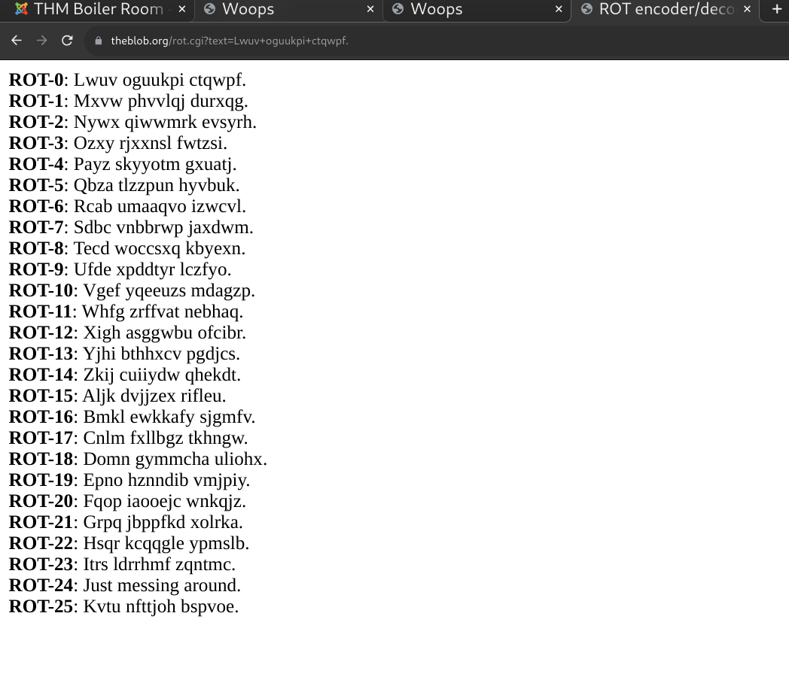
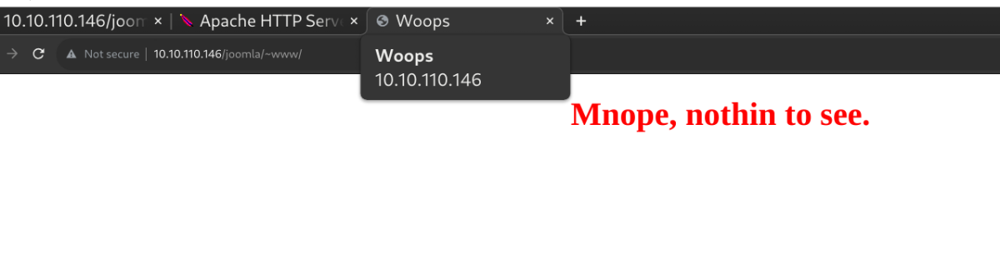
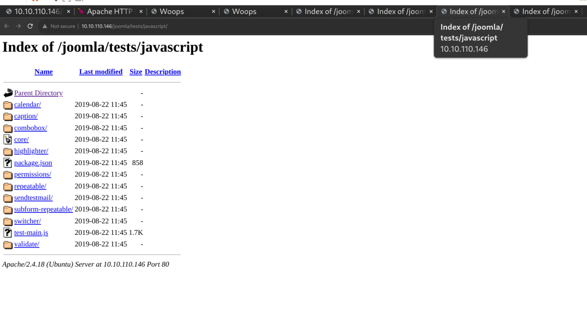
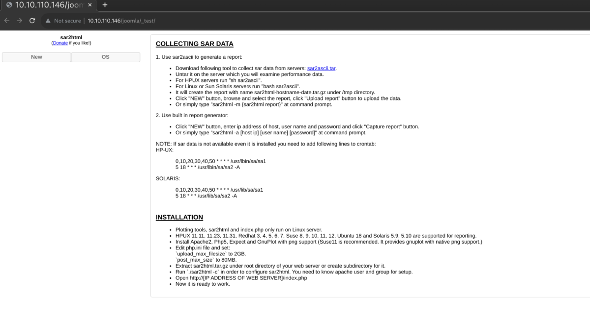
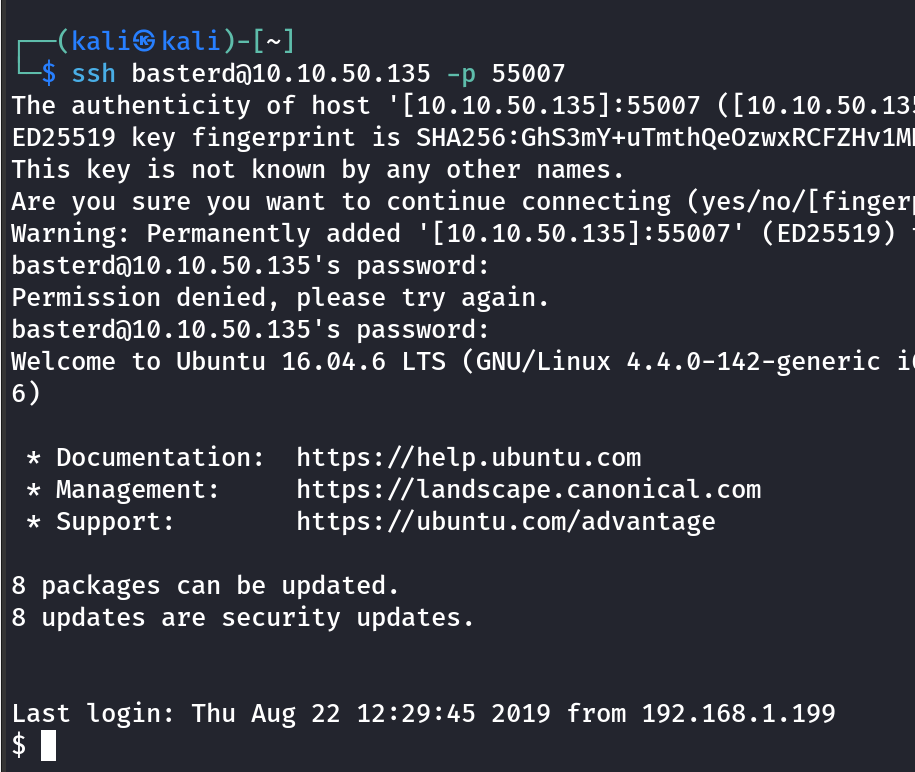
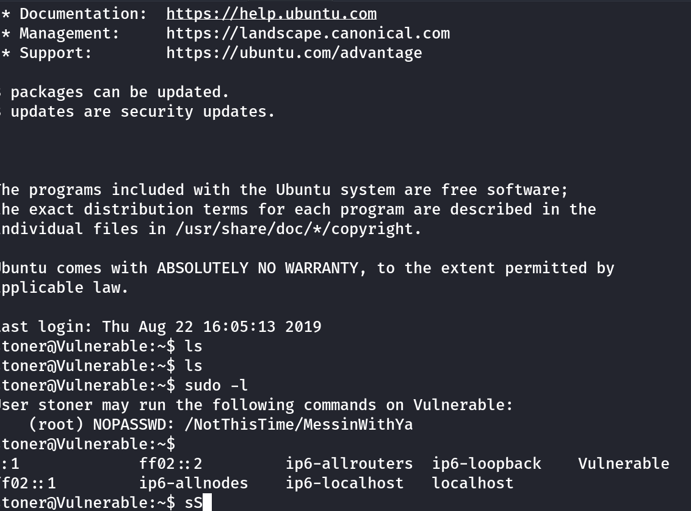
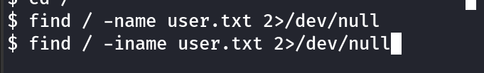

boiler ctf
nmap 10.10.110.146 -p- -A
Starting Nmap 7.94 ( https://nmap.org ) at 2023-09-12 04:34 EDT
Stats: 0:00:21 elapsed; 0 hosts completed (1 up), 1 undergoing Connect Scan
Connect Scan Timing: About 93.52% done; ETC: 04:34 (0:00:01 remaining)
Nmap scan report for 10.10.110.146
Host is up (0.026s latency).
Not shown: 65531 closed tcp ports (conn-refused)
PORT STATE SERVICE VERSION
21/tcp open ftp vsftpd 3.0.3
|_ftp-anon: Anonymous FTP login allowed (FTP code 230)
| ftp-syst:
| STAT:
| FTP server status:
| Connected to ::ffff:10.11.11.91
| Logged in as ftp
| TYPE: ASCII
| No session bandwidth limit
| Session timeout in seconds is 300
| Control connection is plain text
| Data connections will be plain text
| At session startup, client count was 1
| vsFTPd 3.0.3 - secure, fast, stable
|_End of status
80/tcp open http Apache httpd 2.4.18 ((Ubuntu))
|_http-title: Apache2 Ubuntu Default Page: It works
| http-robots.txt: 1 disallowed entry
|_/
|_http-server-header: Apache/2.4.18 (Ubuntu)
10000/tcp open http MiniServ 1.930 (Webmin httpd)
|_http-title: Site doesn't have a title (text/html; Charset=iso-8859-1).
55007/tcp open ssh OpenSSH 7.2p2 Ubuntu 4ubuntu2.8 (Ubuntu Linux; protocol 2.0)
| ssh-hostkey:
| 2048 e3:ab:e1:39:2d:95:eb:13:55:16:d6:ce:8d:f9:11:e5 (RSA)
| 256 ae:de:f2:bb:b7:8a:00:70:20:74:56:76:25:c0:df:38 (ECDSA)
|_ 256 25:25:83:f2:a7:75:8a:a0:46:b2:12:70:04:68:5c:cb (ED25519)
Service Info: OSs: Unix, Linux; CPE: cpe:/o:linux:linux_kernel
Service detection performed. Please report any incorrect results at https://nmap.org/submit/ .
Nmap done: 1 IP address (1 host up) scanned in 64.11 seconds



Decided to check out the robots.txt
Is it a rabbit hole?

Yes, it looks like it was rabbit hole...again


Contains a password for another user: stoner

After lot of searching:
This is actually the user.txt


---


------------------------------